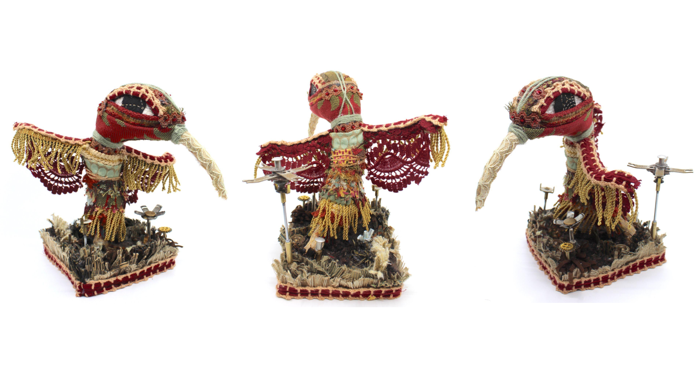

About.
Pruett Maddux (b. 2003) is an interdisciplinary artist practicing in Knoxville, TN and Boulder, CO.
Working primarily with found-object material, she explores materiality through themes of American folk culture and biodiversity.
Pruett's work has been featured at the Knoxville Museum of Art, the Big Crafty, and the Dogwood Arts Festival.
Pruett is currently pursuing a Bachelor of Fine Arts in Sculpture at the University of Colorado Boulder. Supplementing her degree are minors
in Business Innovation and Creative Technology. She is currently working alongside Art and Art History department faculty
in an art honor's thesis.